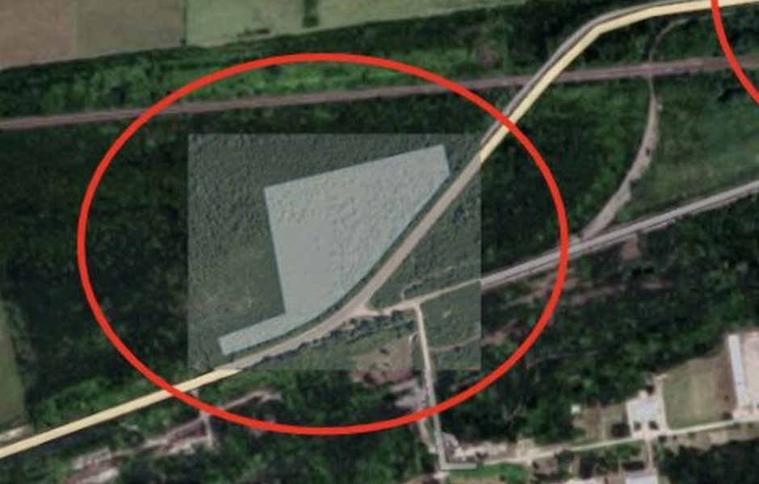
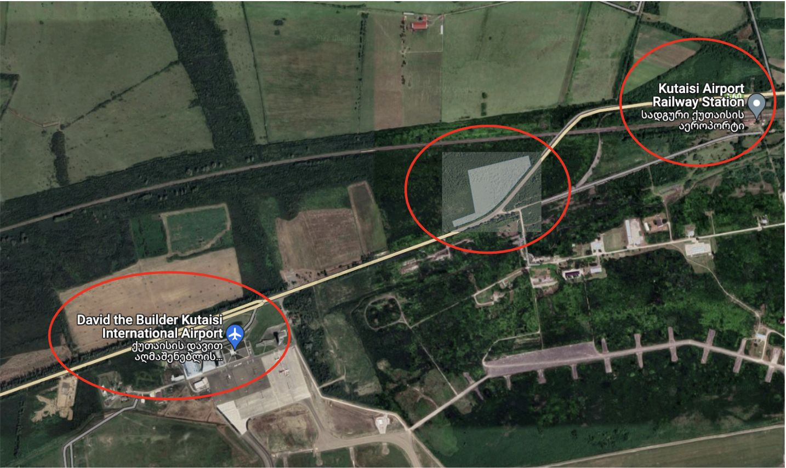
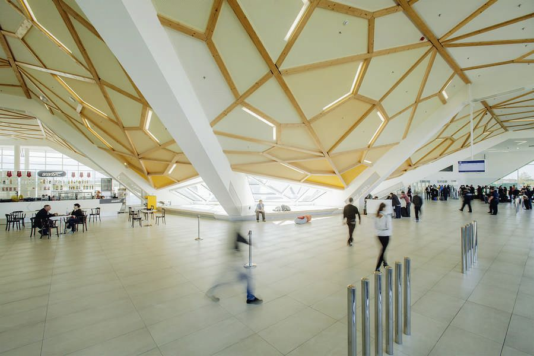
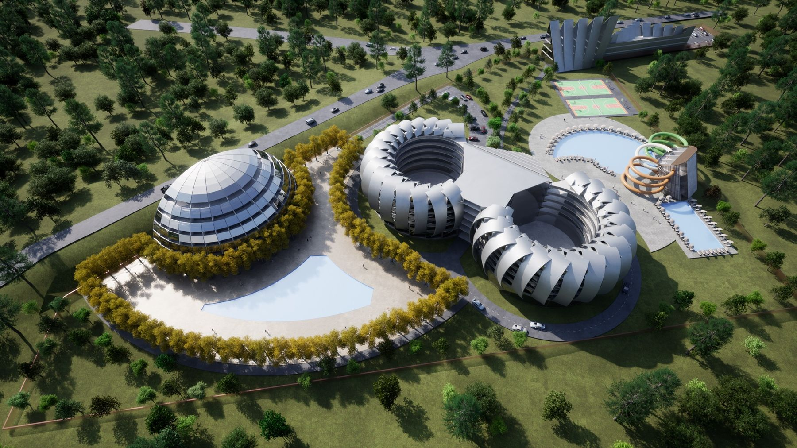
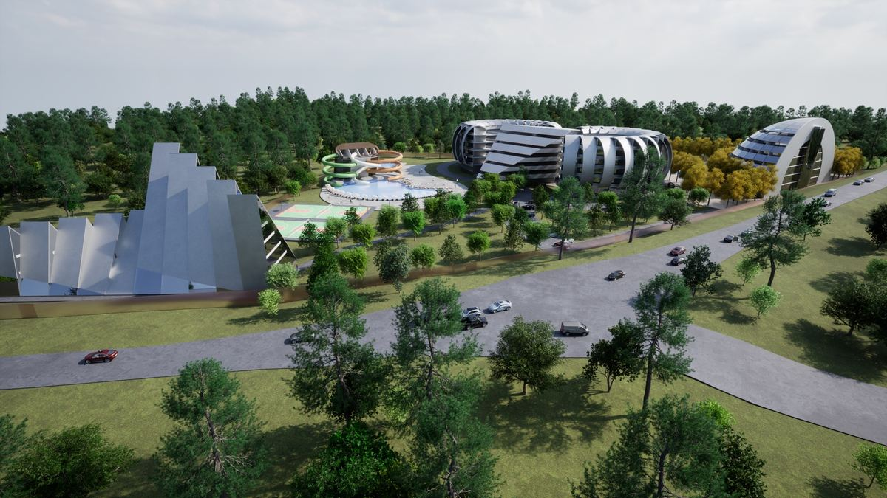
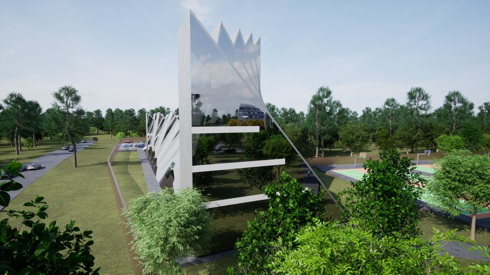
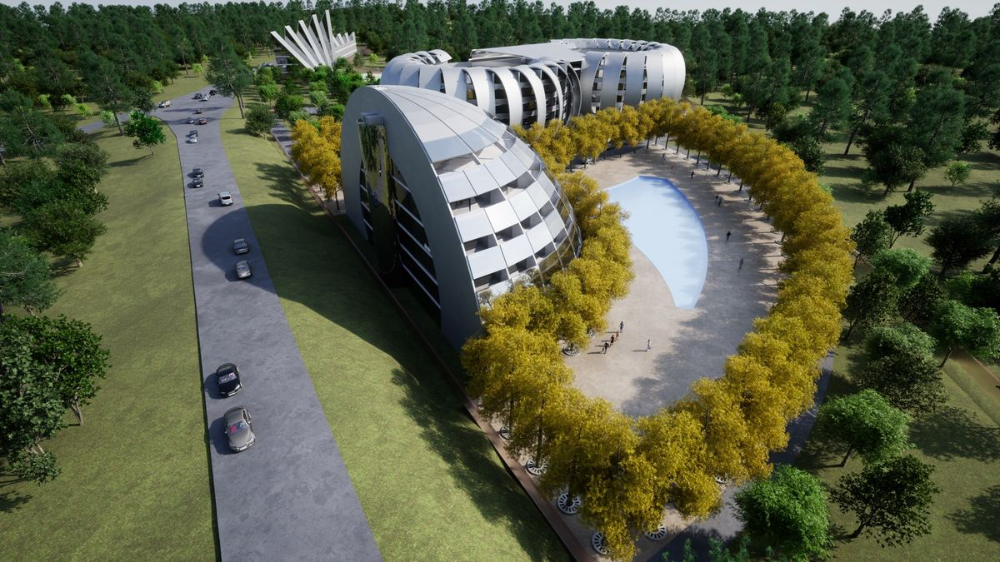

ტერმინალთან რვა ნაკვეთია არასასოფლო-სამეურნეო, 1 ჰა-ზე დიდი და იმ მუნიციპალიტეტში, სადაც სამორინეს სანებართვო მოსაკრებელი გაუქმებულია. შვიდი ეკუთვნის აეროპორტის ოპერატორს, „საქართველოს აეროპორტების გაერთიანებას“ და „საქართველოს რკინიგზას“ — არცერთი არ იყიდება. ეს ერთადერთია კერძო საკუთრებაში. არასასოფლო-სამეურნეო ნიშნავს, რომ მასზე მშენებლობა შესაძლებელია სტატუსის შეცვლის გარეშე და მისი ფლობა შეუძლია უცხოელ ინვესტორს — რაც სასოფლო-სამეურნეო მიწაზე საქართველოში დაუშვებელია.
იხილეთ რეესტრის შემოწმებასრული 3.63 ჰა ნაკვეთის სუფთა გადაცემა, ყოველგვარი დატვირთვის გარეშე, არსებული გენგეგმის ნამუშევრით.
გრძელვადიანი რეგისტრირებული იჯარა ან ყიდვის ოფცია ექსკლუზივით ნებართვების გაფორმებამდე — ალტერნატიული სტრუქტურები განიხილება უშუალოდ მესაკუთრესთან.
ფასი ასახავს იმას, რასაც საჯარო რეესტრი აჩვენებს: ერთადერთი ამგვარი ნაკვეთი კერძო საკუთრებაში ტერმინალიდან 2 კმ-ში, სახელმწიფო გზაზე 422 მ ფრონტით — იხილეთ მიწა.
შენდება თანამედროვე სანავიგაციო სისტემებით — GEL 240 მლნ სახელმწიფო პროექტი. გაიხსნება 2026 წლის ბოლოს: საქართველოს პირველი ICAO Code F აეროდრომი, ტიპების შეზღუდვის გარეშე.
ოთხი ზოლი, 51 გვირაბი, 97 ხიდი, სრულად გაიხსნა 2025 წლის დეკემბერში — თბილისამდე გზა დაახლოებით სამ საათამდე შემცირდა.
2025 წელს ტურიზმის შემოსავალი ისტორიულ მაქსიმუმზეა — 5.5 მლნ ტურისტი (+8.4%) — და ქუთაისსა და წყალტუბოში პირველად შემოვიდნენ საერთაშორისო სასტუმრო ბრენდები.
Marriott-მა ქუთაისში 120 ნომერი დააანონსა, მეორე საერთაშორისო ბრენდმა კი წყალტუბოში — 122; ორივე ასაფრენი ზოლის გახსნამდე. სახელმწიფო GEL 240 მლნ-ს ხარჯავს, რომ აეროპორტმა მძიმე ლაინერები მიიღოს — მის კარიბჭესთან მდებარე ნაკვეთი კი ჯერ კიდევ აუთვისებელია.
| საკადასტრო კოდი | 29.11.34.255 · საჯარო რეესტრის რუკა |
| ფართობი | 36,318 კვ.მ (3.63 ჰა) |
| სტატუსი | არასასოფლო-სამეურნეო — მშენებლობა სტატუსის შეცვლის გარეშე; ღიაა უცხოური პირდაპირი საკუთრებისთვის, რაც სასოფლო-სამეურნეო მიწისთვის საქართველოში დაუშვებელია |
| მუნიციპალიტეტი | წყალტუბოს მუნიციპალიტეტი (ფარცხანაყანევი), იმერეთი |
| წარმომავლობა | პრივატიზებული სახელმწიფოსგან — უპირობო აუქციონი, 2021 |
| საკუთრება | კერძო საკუთრება — ქურდიანების ოჯახი, ორი რეგისტრირებული თანამესაკუთრე; იპოთეკა, ყადაღა ან აკრძალვა რეგისტრირებული არ არის |
ხელთ გვაქვს: ამონაწერი რეესტრიდან, აპოსტილით და დამოწმებული გერმანული თარგმანით; სახელმწიფო პრივატიზაციის ნასყიდობის ხელშეკრულება (2021); საკადასტრო გეგმა. ახალი ამონაწერი გაიცემა მონაცემთა ოთახისთვის.

გაცემულია ნაკვეთის სახელმწიფო პრივატიზაციისას; ასლები — მონაცემთა ოთახში. ეს არის თანხმობები განკარგვასა და მშენებლობის კოორდინაციაზე და არა მშენებლობის ნებართვები.
სწორედ არასასოფლო-სამეურნეო სტატუსი იძლევა მშენებლობის შესაძლებლობას სტატუსის შეცვლის გარეშე და საშუალებას აძლევს უცხოელ ინვესტორს საერთოდ ფლობდეს ნაკვეთს — რასაც საქართველოს კანონმდებლობა სასოფლო-სამეურნეო მიწაზე არ უშვებს. საჯარო რეესტრის გაფილტვრა ამ ნიშნით, საჭირო მასშტაბით, ტერმინალის სიახლოვეს, იმ მუნიციპალიტეტში სადაც სამორინეს მოსაკრებელი გაუქმებულია, ტოვებს ერთ ნაკვეთს.
წყარო: საჯარო რეესტრის ეროვნული სააგენტო (maps.gov.ge) — ტერმინალიდან 3 კმ-ში არსებული ყველა რეგისტრირებული ნაკვეთი მესაკუთრის მითითებით, მონაცემები 2026 წლის 31 ივლისისთვის. ორი უფრო დიდი არასასოფლო ნაკვეთი ტერმინალთან უფრო ახლოსაა; ორივე სამტრედიის მუნიციპალიტეტშია, შეღავათის გარეთ, და არცერთს აქვს გზის ფრონტი.
საერთაშორისო აეროპორტი, მაგისტრალური რკინიგზის სადგური და ოთხზოლიანი სახელმწიფო გზა ამ ნაკვეთიდან 900 მეტრში იყრის თავს — დასავლეთ საქართველოში სხვა ადგილს სამივე არ აქვს.

2024: 1,722,809 მგზავრი (airports.ge) — +97% 2019 წელთან შედარებით. 2025: ≈1.8 მლნ — იან–ნოე იყო 1.69 მლნ (+7%), საქართველოს სამმა აეროპორტმა კი 2025 წელი რეკორდული ჯამური 8.5 მლნ-ით დახურა; ქუთაისის ოფიციალური ჯამი ჯერ არ გამოქვეყნებულა. 2026 I კვ.: 386,238 (+7%); 2026 პროგნოზირებულია მიმდინარე ტემპით. ტერმინალის ტევადობა 2.5 მლნ; ~23–30 პირდაპირი მიმართულება, 10 ავიაკომპანია. ACI Europe-ის მიხედვით KUT მესამეა ევროპის საშუალო აეროპორტებს შორის ზრდით 2019 წელთან შედარებით.
დღეს აეროპორტი ევროპიდან ვიწროფიუზელაჟიან ლოუქოსტ ფრენებს იღებს. Code F ზოლი საშუალებას მისცემს მიიღოს ყურის ავიაკომპანიები, ცენტრალური აზიის ჩარტერები და სატვირთო ბორტები — უფრო ხანგრძლივი ვიზიტები, მეტი ხარჯვა და ტვირთი, რომელსაც პერონთან საწყობი სჭირდება.

| პროექტი | ნომრები | ინვესტიცია | სტატუსი | დეველოპერი |
|---|---|---|---|---|
| Courtyard by Marriott, Kutaisi | 120 | EUR 40 მლნ | გაიხსნება 2028 წლისთვის | Rico Group |
| სანატორიუმ „თბილისის“ რეკონსტრუქცია, წყალტუბო | 122 | EUR 18 მლნ | შენდება, ~2027 | შპს „აკა“ |
| Legends Tskaltubo Spa Resort | 135 | — | მოქმედი, 4 ვარსკვლავი | — |
| აეროპორტის არეალი, 2 კმ რადიუსში | არცერთი | — | არც ბრენდირებული სასტუმრო, არც მასშტაბური გართობა ან რითეილი, არც ლოგისტიკური პარკი | ეს ნაკვეთი |
Marriott ქუთაისში 120 ნომერს აშენებს, საერთაშორისო ბრენდი კი წყალტუბოში ყოფილ სანატორიუმ „თბილისში“ 122-ს გარდაქმნის — ჯამში EUR 58 მლნ, ახალი ასაფრენი ზოლის გახსნამდე. არცერთი არ არის აეროპორტთან. ამ ნაკვეთზე აშენებული სასტუმრო მოემსახურება იმას, რასაც ისინი ვერ ახერხებენ: 05:00-ის ფრენებს, ეკიპაჟებს, ტრანზიტს, ჯგუფებსა და პარკინგს.
120–180 ნომერი, select-service ან upper-midscale ბრენდი, meet-and-greet და გრძელვადიანი პარკინგის შემოსავლით.
აკვაპარკი და საოჯახო გართობა წყალტუბოს, ქუთაისისა და შავი ზღვის ერთდღიანი ნაკადებისთვის.
საწყობები, ცივი ჯაჭვი, e-commerce ფულფილმენტი და საბაჟო საწყობი — მძიმე კარგოსა და 600 მეტრში მდებარე რკინიგზაზე გათვლით.
ჯერ სასტუმრო და კვება, დანარჩენი მიწა — მეორე და მესამე ეტაპებისთვის. რეკომენდებული, რისკშემცირებული გზა.
იგივე ნაკვეთი, აღწერილი მათთვის, ვინც მასზე ააშენებს — თითოეულისთვის მნიშვნელოვანი ციფრები ერთ გვერდზე.
წყალტუბო ერთ-ერთია საქართველოს იმ ზონებიდან, სადაც სათამაშო ბიზნესის სანებართვო მოსაკრებელი — სხვაგან წელიწადში დაახლოებით GEL 5 მლნ (≈USD 1.8 მლნ) — გაუქმებულია. ეს ამ ნაკვეთის ყველაზე დიდი მუდმივი ხარჯური უპირატესობაა: სასტუმროსთან ერთად ის კურორტ-კაზინოს პროდუქტს აძლევს საფუძველს რეგიონული fly-in მოთხოვნისთვის.
აქ განიხილება როგორც ოფციონალობა და არა ძირითადი სცენარი. საკანონმდებლო საფუძველი: „სალიცენზიო და სანებართვო მოსაკრებლების შესახებ“ კანონის მე-7 მუხლის 10¹ პუნქტი — სამორინეს სანებართვო მოსაკრებელი წყალტუბოს მუნიციპალიტეტში გაუქმებულია. 2026 წლისთვის ნორმის ძალაში ყოფნა მაინც უნდა დაადასტუროს ქართველმა იურისტმა; სათამაშო პოლიტიკა შეიძლება ერთ საპარლამენტო სესიაზე შეიცვალოს. ზემოთ არცერთი სცენარი მასზე არ არის დამოკიდებული.

კონცეფცია, Kurdiani Architects


ორი სასტუმრო, კაზინო, აკვაპარკი, რითეილი და პარკინგი 3.63 ჰა-ზე — დიზაინი Kurdiani Architects-ისა, მესაკუთრეთა საკუთარი ბიუროსი.
გაყიდვა, მიწის იჯარა ან ყიდვის ოფცია — სამივე განიხილება. პირველი ზარიდან ხელმოწერამდე: ვიზიტი ადგილზე → მონაცემთა ოთახი → საორიენტაციო შეთავაზება → ექსკლუზივი.
ინდექსი ჩამოთვლის რა არის საქმეში და ასევე ღიად — რა რჩება მოსამზადებელი: განაშენიანების კოეფიციენტები, კომუნიკაციების სიმძლავრეები, დამოუკიდებელი შეფასება და იურისტის დასკვნა სათამაშო ბიზნესზე.